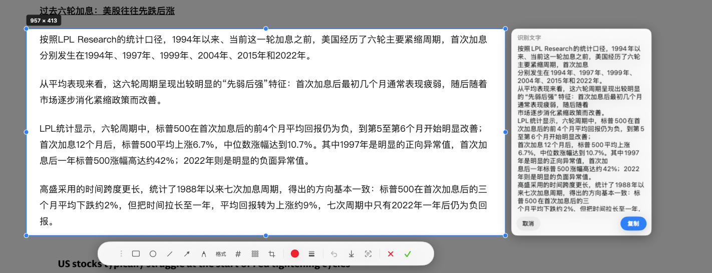
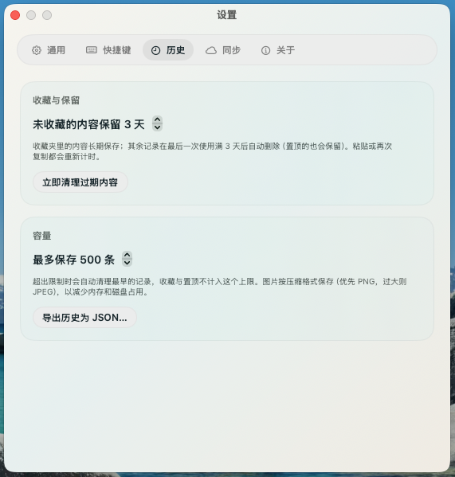
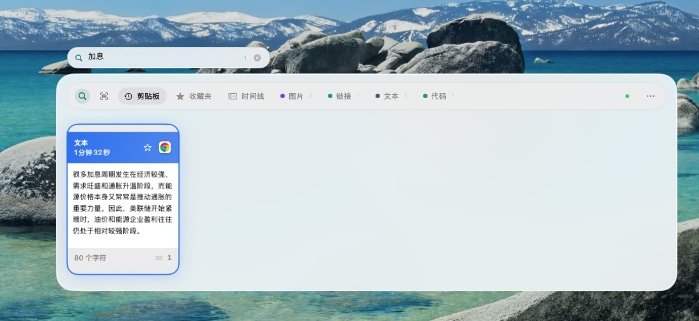
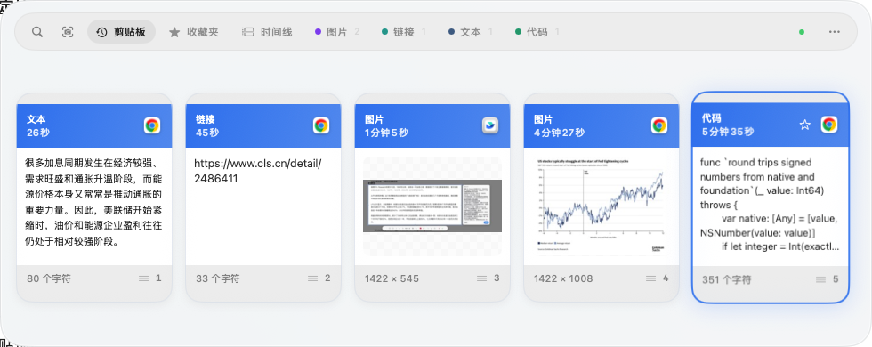
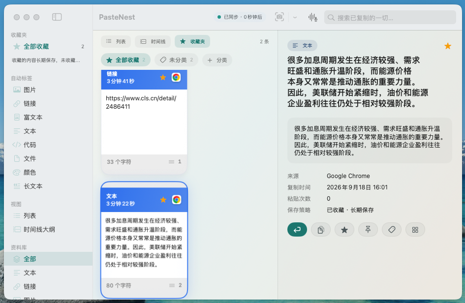
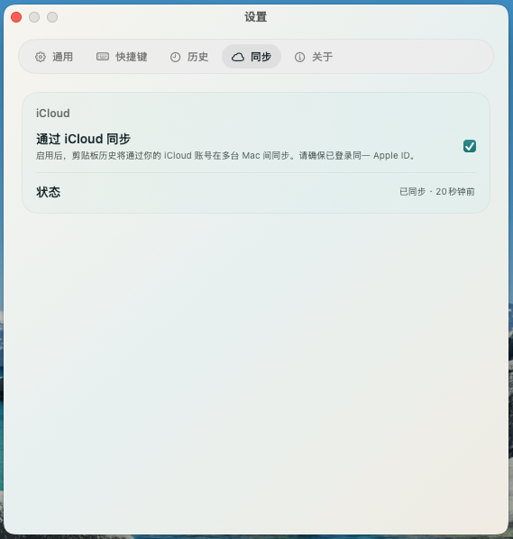

菜单栏里的剪贴板巢穴。文字、链接、图片、代码、颜色，自动收好，一键回来。

底部货架、主窗口、截图各有独立快捷键。录下即刻生效，被占用会提醒，一键恢复默认。

冻结屏幕，拖出选区，矩形 / 箭头 / 画笔 / 马赛克 / 文字标注，确认后进入剪贴板与历史。

本机 Vision 识别中英文。可选复制，或只留文字不要图。链接会自动变成链接条目。
链接、代码、颜色、文件自动打标。搜索标题、正文、来源应用，实时出结果。

收藏长期保存，其余按你设定的天数自动清理。iCloud 可选，数据走你的 Apple ID，我们碰不到。

